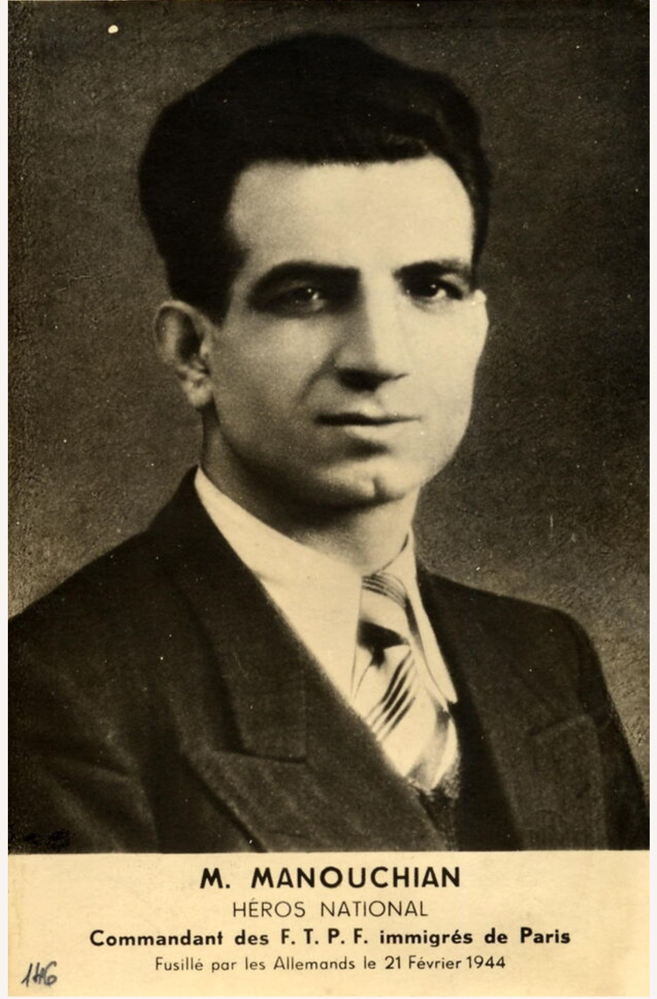

Nom : Missak Manouchian
Dates : 1er septembre 1906 – 21 février 1944
Origine : Arménienne (Empire ottoman)
Nationalité : Française (engagement Résistance)
Missak Manouchian est l’une des figures les plus emblématiques de la Résistance française. Poète, ouvrier, militant antifasciste, il devient le chef du groupe de résistants étrangers connu sous le nom de FTP-MOI, immortalisé par l’Affiche Rouge. Son courage, son engagement et sa dernière lettre à Mélinée en font un symbole de la lutte contre le nazisme.
Arrivé en France après le génocide arménien, Manouchian s’engage très tôt dans les mouvements ouvriers et antifascistes. Pendant l’Occupation, il rejoint les Francs-Tireurs et Partisans – Main-d’Œuvre Immigrée.
Il dirige un groupe de résistants composé de Polonais, Italiens, Hongrois, Arméniens, Espagnols, tous unis pour combattre l’occupant nazi. Le groupe mène des actions spectaculaires : sabotages, attentats, exécutions de officiers allemands, destructions de convois.
Le groupe Manouchian est arrêté en novembre 1943 après une vaste opération de la police française et de la Gestapo. Les résistants sont torturés puis condamnés à mort.
Missak Manouchian est fusillé le 21 février 1944 au mont Valérien. Son courage face à la mort et sa dernière lettre à Mélinée marquent profondément l’histoire de la Résistance.
Manouchian incarne la Résistance étrangère, l’engagement total et le sacrifice. Son nom est associé à l’Affiche Rouge, symbole de la propagande allemande retournée contre elle-même : les « terroristes » sont devenus des héros.
En 2024, Missak et Mélinée Manouchian entrent au Panthéon, reconnaissance ultime de leur rôle dans la libération de la France.